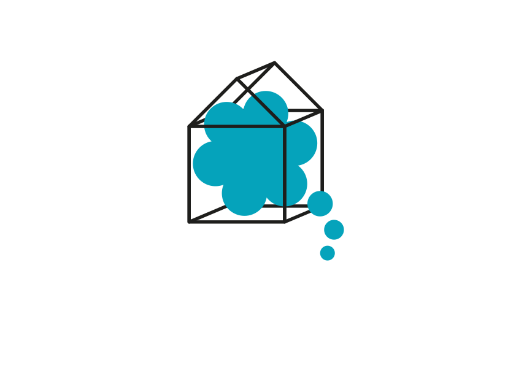

Cooperativa Cultural · Córdoba
Somos una cooperativa cultural radicada en Córdoba, Argentina, dedicada a la producción y difusión de narrativas en diversos soportes y lenguajes, donde apostamos por el derecho a la lectura, la cultura libre y la construcción comunitaria.
A modo de manifiesto, quienes integramos la casa, habitamos este jardín como una declaración de lo que pensamos y creemos, armando rondas de mate para compartir la palabra, las ideas y los sueños e invitando a quienes leen a sumarse a nuestro barrio imaginado.
Estamos armando el Barrio Imaginado, una comunidad que nos encuentre compartiendo la vida, la diaria, la palabra y la conversación. Dejanos el contacto que vos quieras para formar parte de nuestro barrio. ¡Gracias! Somos mejores cuando pensamos juntes.
Sitio en construcción · 2026